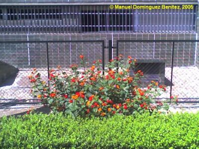
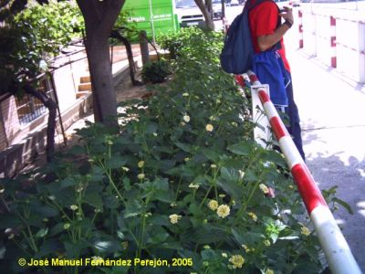
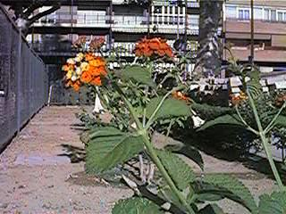

|
Lantana
x strigocamara R.W. Sanders, in SIDA 22(1): 392 (2006)
L. camara × L. nivea × L. scabrida × L. splendens; L. camara auct., non L. |
Verbenáceas |
| Bandera española, lantana |
Arbusto caducifolio |
| Arbusto caducifolio,
0,3-3 m. (rara vez hasta 5m); muy ramificado, hirsuto,
oloroso; tallo cuadrangular a veces con aguijones. Hojas simples, opuestas, pecioladas, ovado-oblongas; lámina de 2-12 x 2-6 cm, base subcordada, acuminadas en el ápice, de borde dentado, ásperas y rugosas en el haz. Inflorescencia capituliforme, de c. 2 x 3 cm. Flores hermafroditas, amarillo-anaranjadas, las jóvenes rojizas en la madurez; cáliz pequeño, con dos lóbulos; corola tubulosa, zigomorfa; 4 estambres didínamos unidos al tubo de la corola; ovario supero binocular. Fruto de tipo drupa, de 4-5 milímetros de diámetro, esférico, de color negro brillante en la madurez, con dos huesecillos. Florece en primavera, verano y otoño. |
 Ejemplar de flores rojas  Ejemplar de flores amarilla |
|  Foto: Carlos Romero Zarco |
Observaciones: Hasta la fecha se conocía a esta especie en todo el
mundo como "Lantana camara", sin embargo
estudios recientes (Sanders, 2006) han demostrado que la
especie de Linneo no es la misma que se cultiva en
jardinería y que se considera en muchos países cálidos
como planta invasora. Al parecer la especie más
extendida surgió por hibridaciones sucesivas entre
varias especies que se cultivaban en los jardines
botánicos europeos en el siglo XIX, y hasta ahora no
estaba descrita. Las especies se diferencias
principalmente por detalles de los pelos de las hojas. Las hojas y
flores tienen propiedades medicinales
(emenagogas, estomáquicas, carminativas, para
curar gripes crónicas y para mejorar problemas del
hígado). Los frutos inmaduros son tóxicos.
|
| Área de origen.- De origen híbrido a partir de varias especies americanas subtropicales. Se ha introducido como planta ornamental por gran parte de las zonas cálidas y templadas del planeta, naturalizándose en muchos casos y llegando a constituir incluso una especie invasora. | |
| Uso en el campus: F. de
Biología, 3 ejemplares; F. de Química, 12 ejemplares en tres
macizos; F. de Matemáticas, seto de 15 m de la variedad
blanco-crema; jardines centrales, 3 ejemplares; Instituto de
idiomas, 2 ejemplares; F. de Informática, 5 ejemplares. |
Localización: Zona central
del Campus
Jardín de la Facultad de Química, fachada Sur Jardín de la Facultad de Matemáticas, fachada Sur Jardín del Instituto de Idiomas Jardín de la Facultad de Informática |
|
Referencias: Sanders, R.W. (2006)
Taxonomy of Lantana Sect. Lantana (Verbenaceae): I.
Correct Application of Lantana camara and Associated
Names. SIDA 22(1): 381-421
|
|
| ©
Manuel Domínguez Benítez & Carlos Romero Zarco, 2005 Versión 2: C.R.Z. (2007) |
|